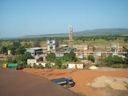
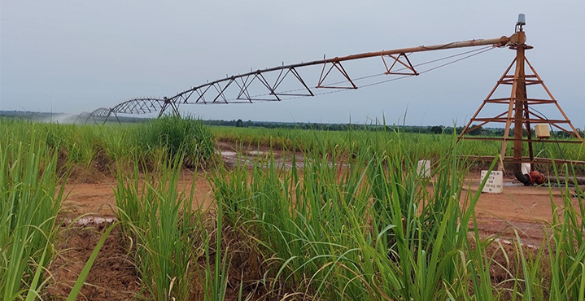
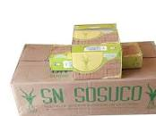

Description
La SN SOSUCO (Société Nationale Sucrière du Burkina Faso) est l’une des principales industries sucrières du pays, située près de Banfora. Elle transforme la canne à sucre cultivée dans la région en sucre raffiné, jouant un rôle clé dans l’économie locale et nationale.
Historique
Créée pour soutenir la production sucrière au Burkina Faso, la SN SOSUCO a contribué au développement économique de Banfora en créant des emplois et en favorisant l’industrialisation de la région. Elle est un symbole important de la modernisation agricole et industrielle locale.
Galerie photos


